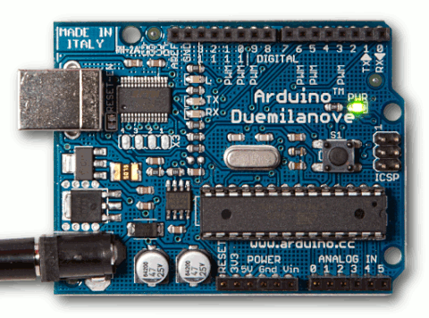
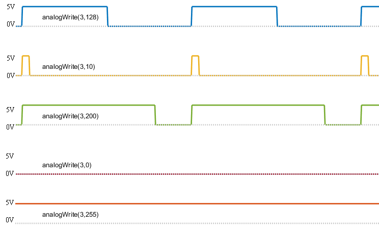
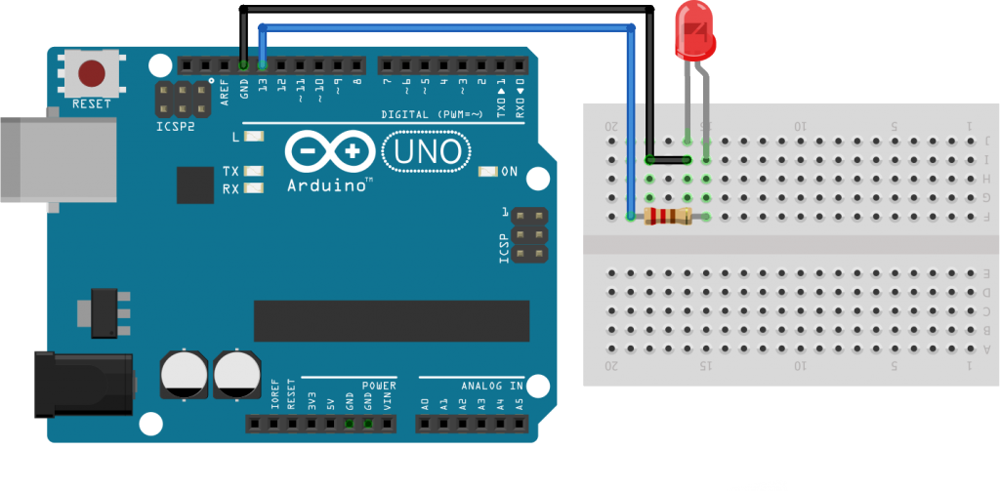

Arduino
Qué es Arduino?
Simple, low cost tools for creating digital projects by non-engineers- open source hard+soft
- Arduino programming language based on Wiring
- Arduino software (IDE) based on Processing
Comenzó como Wiring. Fue tesis de grado de Hernando Barragán
Historia de Hernando Barragán - Tesis de Wiring
- Micro: ATmega328
- 2 KB SRAM
- Operating Voltage: 5V
- Input Voltage (recommended): 7-12V
- Digital I/O Pins: 14 (of which 6 provide PWM output)
- Analog Input Pins: 6
- Flash Memory: 32 KB of which 0.5 KB used by bootloader
- EEPROM: 1 KB
- Clock Speed: 16 MHz
- Micro: ATmega2560
- 8 KB SRAM
- Operating Voltage: 5V
- Input Voltage (recommended): 7-12V
- Digital I/O Pins: 54 (of which 15 provide PWM output)
- Analog Input Pins: 16
- Flash Memory: 256 KB of which 8 KB used by bootloader
- EEPROM: 4 KB
- Clock Speed: 16 MHz
- Micro: Tensilica 32-bit RISC CPU Xtensa LX106
- 64 KB SRAM
- Operating Voltage: 3.3V
- Input Voltage: 7-12V
- Digital I/O Pins (DIO): 16
- Analog Input Pins (ADC): 1
- Flash Memory: 4 MB
- Clock Speed: 80 Mhz
- EEPROM: 512 KB
- Wi-Fi: IEEE 802.11 b/g/n
- Micro: 1GHz, Single-core CPU
- 512MB RAM
- Mini HDMI and USB On-The-Go ports
- Micro USB power
- HAT-compatible 40-pin header
- WiFi / Bluetooth 4.0
- CPU – Broadcom BCM2711, Quad core Cortex-A72 (ARM v8) 64-bit SoC @ 1.5GHz
- RAM – 1GB, 2GB or 4GB LPDDR4-2400 SDRAM (depending on model)
- WiFI – 2.4 GHz and 5.0 GHz, Bluetooth 5.0, BLE
- Ethernet – Gigabit
- USB – 2 USB 3.0 ports; 2 USB 2.0 ports
- GPIO header – Raspberry Pi standard 40 pin
- HDMI – 2 × micro-HDMI ports (up to 4kp60 supported)
- OS – Debian Linux 10 based
- Micro: SoC Quark X1000
- Operating Voltage: 3.3V / 5V
- Input Voltage: 7-15V
- Digital I/O Pins: 14 (of which 6 provide 8/12-bit PWM output)
- Analog Input Pins: 6
- Flash Memory: 512 kB
- RAM: 256 MB DDR3
- SRAM: 512 kB
- Flash Storage: 8MB
- EEPROM: 8kB
- Clock Speed: 400 MHz
¿Para qué se puede usar?
Arduino IDE: Features
- MultiPlataforma
- Open-source
- Módulos
- Soporte múltiples placas
- Monitor Serie
- Variedad de Ejemplos
E/S
digital
analog

Blink
void setup() {
pinMode(LED_BUILTIN, OUTPUT); // LED_BUILTIN = 13 🙂
}
void loop() {
digitalWrite(LED_BUILTIN, HIGH);
delay(1000);
digitalWrite(LED_BUILTIN, LOW);
delay(1000);
}
Protoboard

Blink external LED
 ¿Hay que cambiar la constante LED_BUILTIN?Fade
int brightness = 0;
int fadeAmount = 5;
void setup() {
pinMode(9, OUTPUT);
}
void loop() {
analogWrite(9, brightness);
brightness = brightness + fadeAmount;
if (brightness <= 0 || brightness >= 255) {
fadeAmount = -fadeAmount;
}
delay(30);
}
Comunicación Serial
int count = 0;
unsigned long previousMillis = 0;
void setup() {
Serial.begin(9600);
Serial.println("Boom");
}
void loop(){
unsigned long currentMillis = millis();
if (currentMillis - previousMillis >= 1000) {
previousMillis = currentMillis;
Serial.println("Count: " + String(++count));
}
}
Librerías
#include <EEPROM.h>
void setup() {
Serial.begin(9600);
Serial.println(EEPROM.length());
}
void loop() {}
Comunicación con el exterior
- Ethernet
- WiFi
- IR
- NFC
- Bluetooth
- LoRa
- RF (433MhZ)
- TX/RX (Interfaz serie)
- ...?
¿Esto como sigue?
- Interrupciones
- ESP8266 - WiFi
- IR Commands
- Read Temp/Hum
- MQTT PubSubClient
- Cloud solutions